De cadeaus gaan vóór de wandeling al uit de achterbakken.
AvaVoor jullie: een grote mand met lekkers.
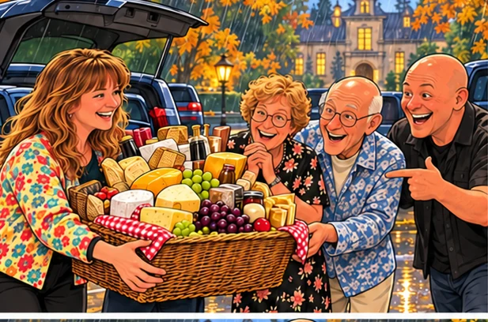
BobMet kaas en toast. Noodrantsoen voor de wandeling.
63 jaar liefde. Vier generaties chaos.
Een villa die dacht dat het gewoon een etentje werd.
Lees de kaders van links naar rechts, daarna de volgende rij. Op je telefoon lees je gewoon van boven naar beneden. A+ Letters vergroot de tekst.
JAAR GETROUWD
Aad & Ties
Hand in hand sinds 1963.
37 scènes · 84 unieke tekeningen · 7 hoofdstukken
Cadeaus in de auto. Daarna tien minuten door de regen.
De cadeaus gaan vóór de wandeling al uit de achterbakken.
AvaVoor jullie: een grote mand met lekkers.

BobMet kaas en toast. Noodrantsoen voor de wandeling.
RickWij hebben twee tassen.
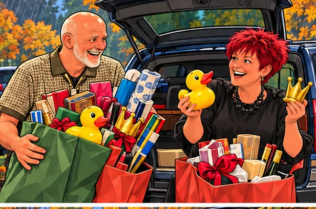
PetraEén met lekkers. En één met vraagtekens.
TiesDat is een hoop voor tien minuten lopen.
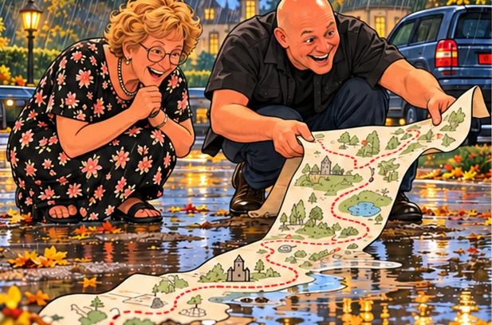
BobDe routebeschrijving is optimistisch.
Vazen, een snijplank… en een heel praktisch portret.
SuusMooie vazen. Voor mooie bloemen.
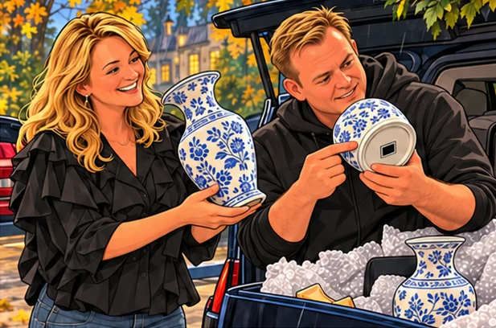
KwintenWaar zit de wifi-aansluiting?
ElisaEn deze snijplank: jullie op jullie mooist.
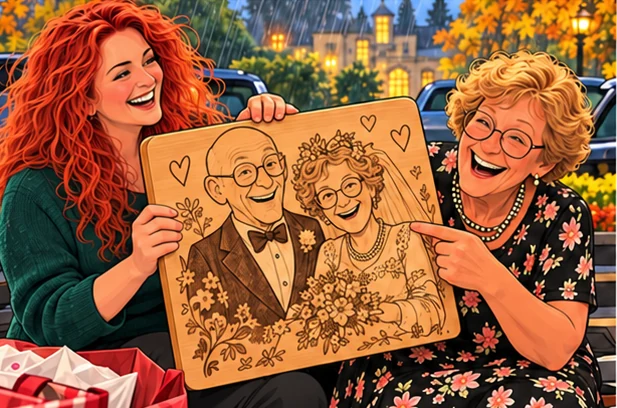
TiesDan snijden we toch niet door onze gezichten?
AadLeg de kaas maar op mijn broek.
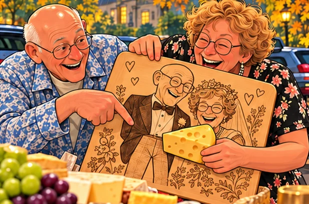
Tien minuten lopen. Volgens iemand die binnen zat.
BobWe moeten een tunnel bouwen. Wie pakt dat op?
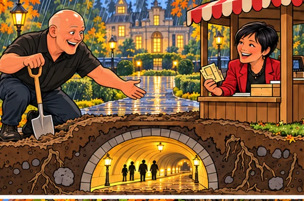
ChaIk verkoop kaartjes. Twee droge sokken per persoon.
Danny ontdekt een ernstig huishoudelijk probleem: de natuur.
DannyWie is hier verantwoordelijk voor de vloer?
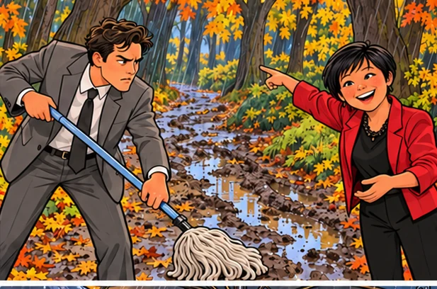
ChaDe natuur.
DannyDan wil ik de manager spreken.
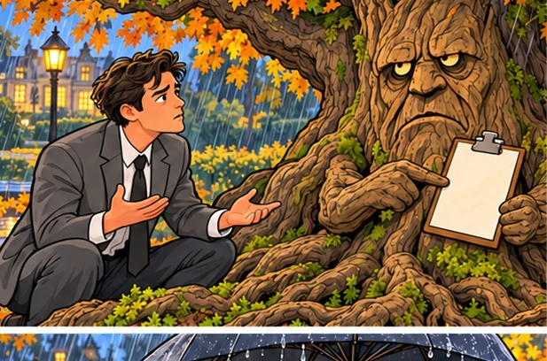
Technische ondersteuning. Acht jaar. Geen voorrijkosten.
JoeriAls ik hem hack, kan ik de regen misschien uitzetten.
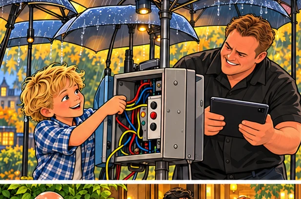
KwintenEerst een back-up maken.
BobVan de regen?
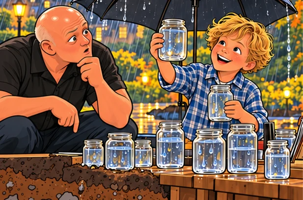
Binnen ontstaan drie tafels. En minstens vier regeringen.
BobSport, praatdienst, kinderbestuur. Ik blijf boventallig.
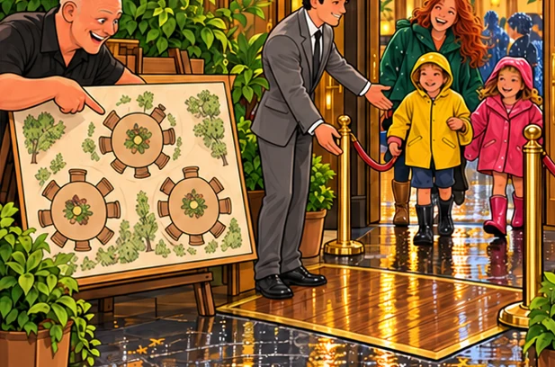
DannyStop! Er loopt een schoen over mijn schone modder!
Eerst drogen. Dan pas luchtkastelen bouwen.
AvaEerst droog. Daarna mag je weer ingewikkeld doen.
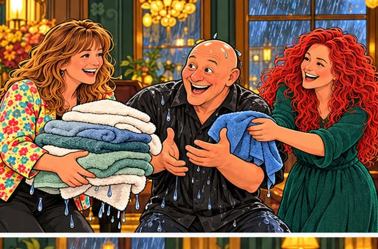
ElisaBob, houd deze handdoek vast.
BobKan ik dat delegeren?
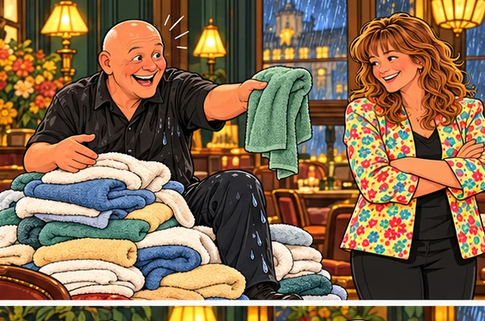
AvaNee. Eindelijk werk op jouw niveau.
Aad en Ties vieren. De kinderraad vergadert.
De hoofdpersonen. Al sinds 1963 een uitstekend team.
TiesWat gezellig dat iedereen er is!
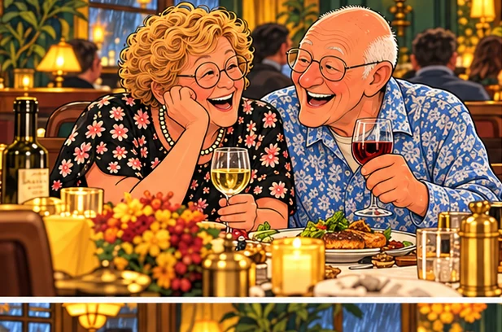
AadMarcel niet.
TiesDie zit onder een palmboom.
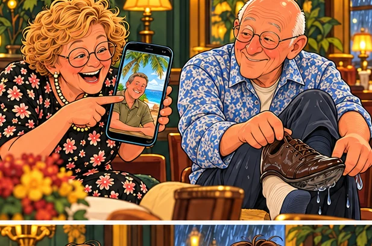
AadVerstandig. Die hoeft straks niet terug te lopen.
In de tussentijd in de ministerraad…
JunaVanaf nu luisteren jullie naar ons!
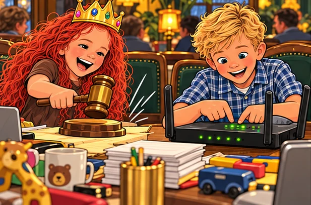
JoeriIk heb de regels al in de wifi gezet.
MasonWaar zijn onze ijsjes?
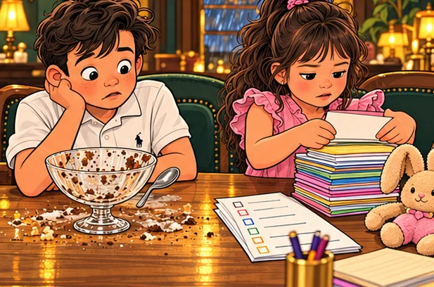
Josie MayEerst de vergadering. Dan de ijsjes.
De staatsgreep begint bij de suikerzakjes.
JunaEerst de suiker. Dan de bediening.
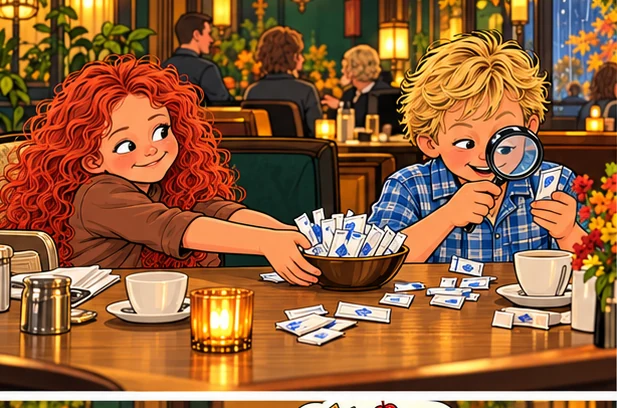
JoeriVoorraad geïnventariseerd!
SuusIs dat een smokkelbende?
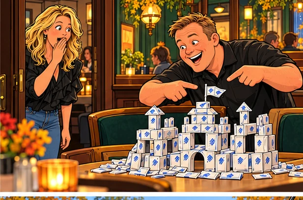
KwintenSuikerzakjes. De koffietafel is overvallen.
MasonEén zakje voor een ijsje.
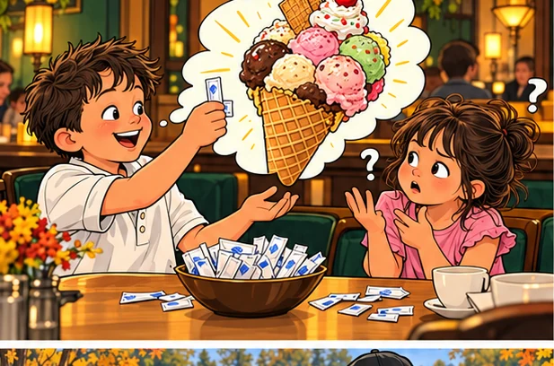
Josie MayWe zijn heel slecht in rekenen.
Ondertussen bij de visstek: de storingsdienst draait door.
DjordyPapa, statusrapport.
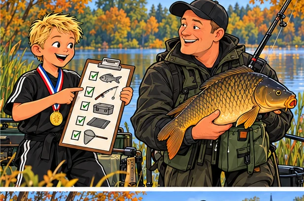
WesleyGeen storing. Wel een karper.
DjordyPrima. Die wil ik eerst spreken.
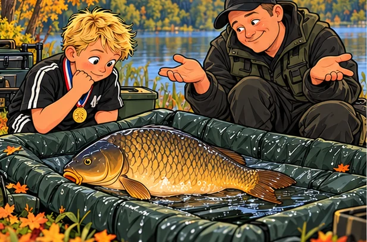
WesleyHij zegt niks.
DjordyEindelijk iemand die een vergadering begrijpt.
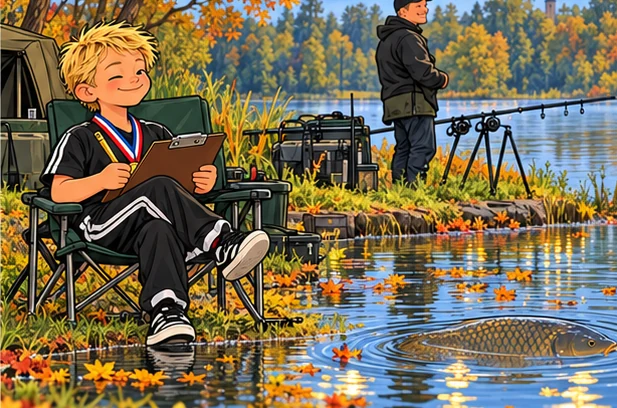
De sportclub bewaakt de darts. De bierclub bewaakt de aanvoer.
De sportclub verklaart de dartstafel tot onafhankelijk gebied.
JunaIedereen wisselt van plaats!
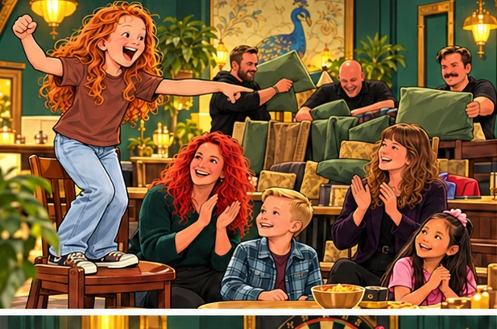
ElisaGezellig!
PetraNa deze leg.
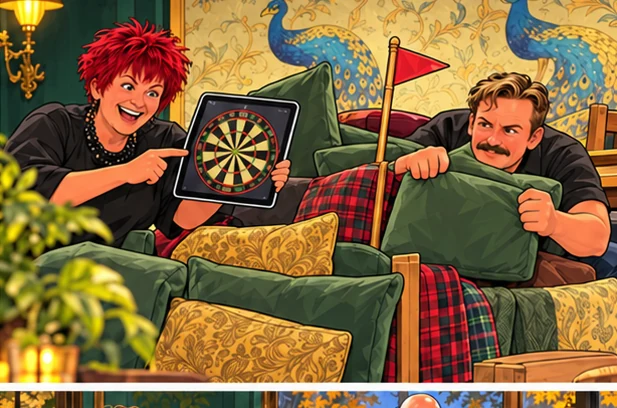
FloranEn daarna de volgende.
LourenWe houden het wel gezellig. Op afstand.
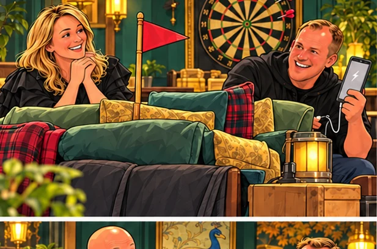
Rick steekt de grens over naar de bierclub.
JunaDe kinderraad wil rust!
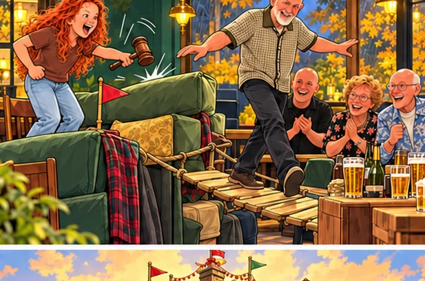
RickWat is hier de tussenstand?
BobDrie ideeën. Nog niemand die ze uitvoert.
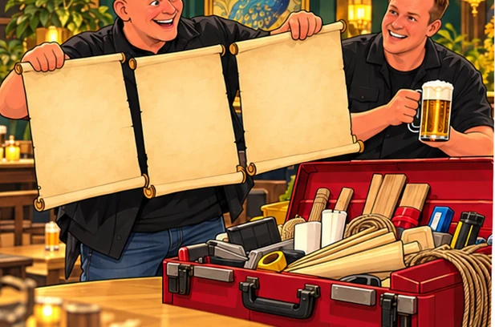
KwintenEen productieve avond, dus.
Bobs luchtkasteel krijgt alvast een steiger.
BobIk denk groot. Jullie mogen beginnen met bouwen.
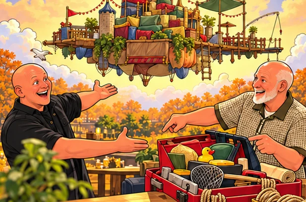
RickWanneer help jij?
BobTijdens de opening. Mits het niet bijt.
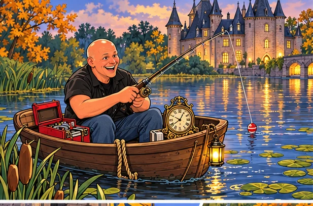
Linda heeft haar kasteel lang geleden al geboekt.
LindaHier zijn ridders, muziek en een kasteel. Bij jullie?
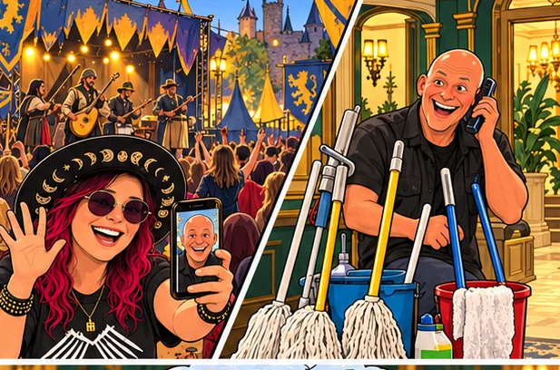
BobDrie tafels. En Danny dweilt de aarde.
LindaJullie festival is vreemder.
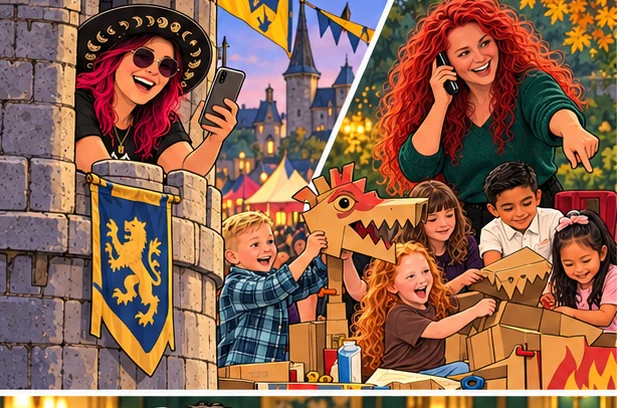
ElisaBel straks de kinderen. We missen nog een draak.
Een dweil, een papegaai en een heel rustige geldteller.
Danny vraagt of Bob ooit iets boeddhistisch heeft gevonden.
DannyDat kan helemaal niet. India heeft Nederland nooit veroverd.
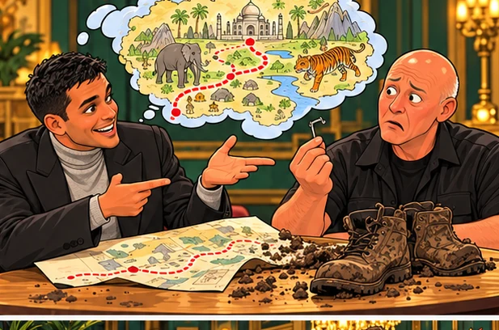
BobIk vond wel een kromme spijker.
DannyZie je. Geen boeddha. Onderzoek afgerond.
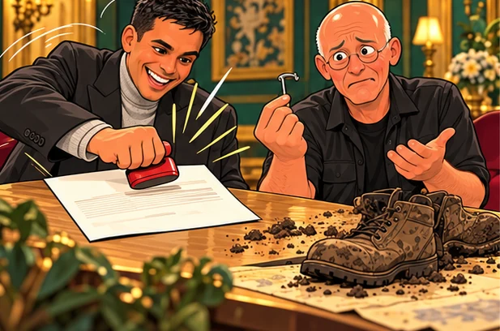
De poetsdienst neemt de hele villa over.
DannyEerst de vloer. Dan de muren. Dan de buren.
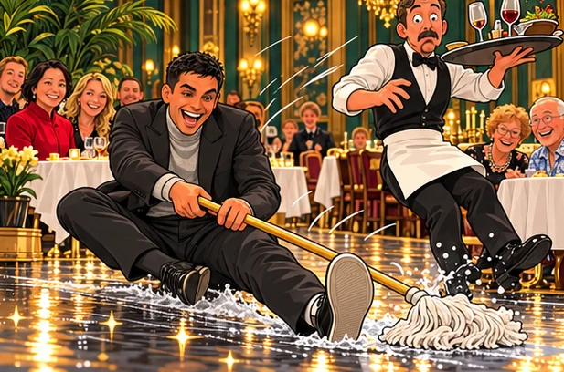
BedieningMaar we zijn nog open!
DannyPrima. Voeten omhoog, ik kan eronderdoor.
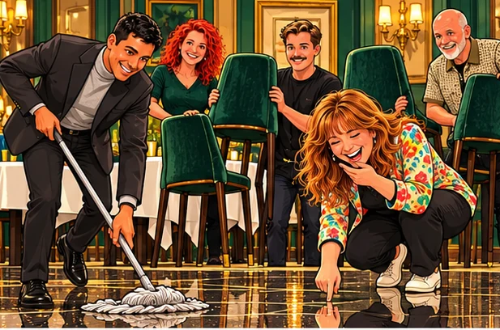
AvaStraks glimmen we harder dan die kroonluchter.
Een papegaai bezorgt Marcels bericht. Met overbagage.
SuusTok! Niemand weet wat het belangrijkste nieuws is.
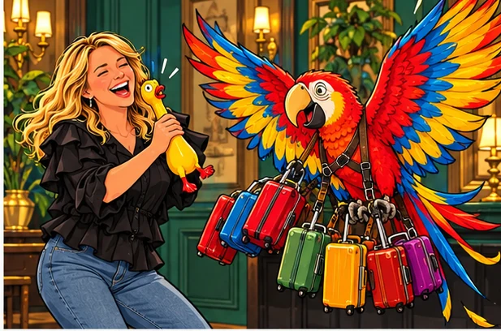
PapegaaiHIER IS DROOG!
SuusWat zit er in die koffers?
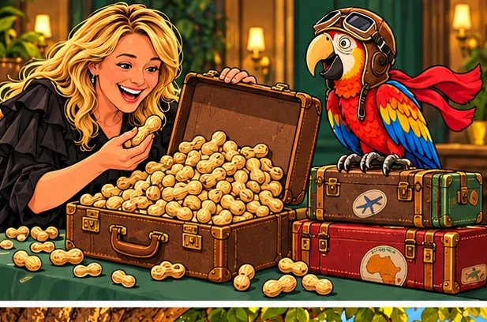
PapegaaiPINDA’S. IK VLIEG NIET ECONOMY.
BobFinancier jij onze tunnel? De bouw delegeren we ook.
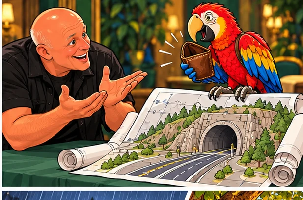
Ondertussen in Afrika: Marcel telt rustig zijn geld.
MarcelHet geld komt uit Nederland. Ik blijf bij de boom.
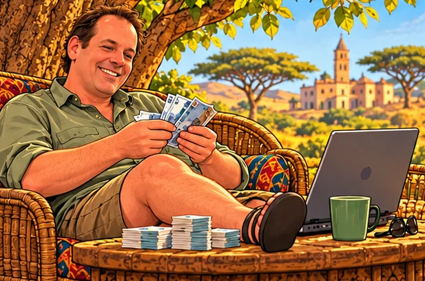
BobDoe je mee aan ons tunnelplan?
MarcelIk zit al in de schaduw.
MarcelEén, twee, drie…
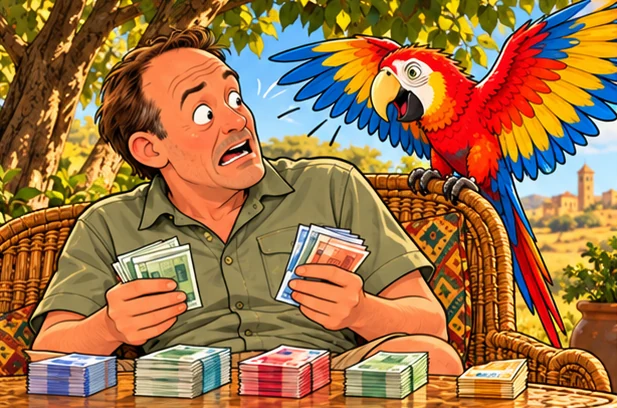
PapegaaiHIER IS DROOG!
MarcelNu kan ik opnieuw beginnen.
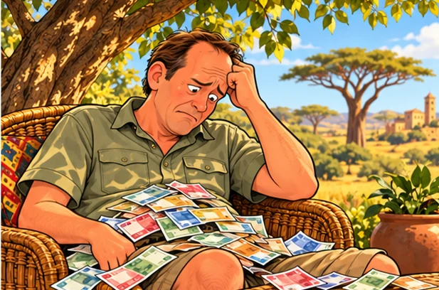
Elisa belt de storingsdienst. Djordy neemt de leiding.
ElisaJullie missen een heel gezellig feest.
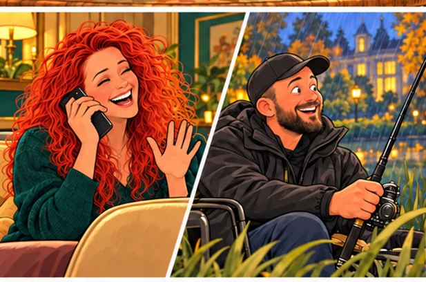
WesleyWe zijn er in gedachten bij.
DjordyPapa is vooral bij een dobber.
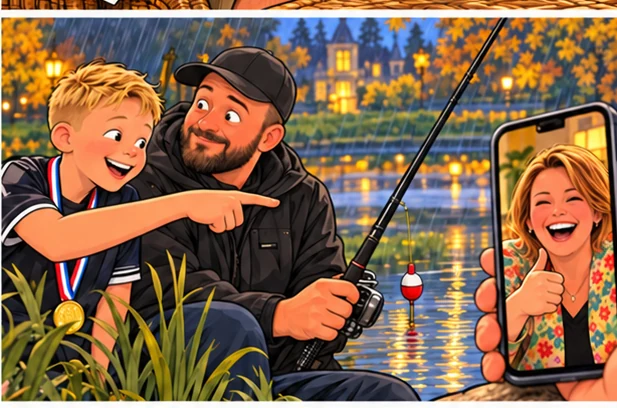
AvaKun jij Bob ook een taak geven?
DjordyLaat Bob voorlopig niks bedenken. Dat voorkomt vervolgschade.
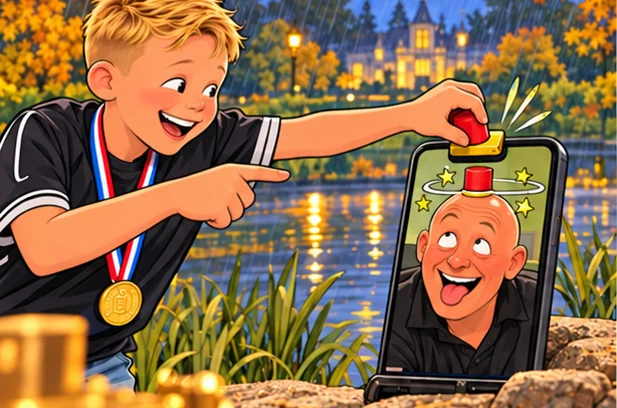
De ministerraad verhuist naar een drakenpaleis.
JunaIk ben de koningin van het vuur!
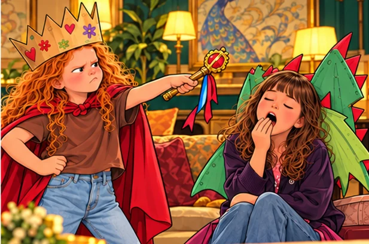
RosalieIk ben de draak. Maar ik heb straks wel pauze.
JoeriWelke firmware heb jij?
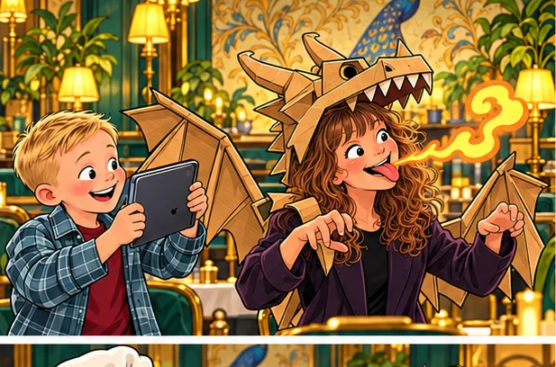
RosalieIk spuug gewoon. Werkt altijd.
Een eigen ster, lauw bier en patat met vertraging.
De chef heeft zichzelf alvast een ster gegeven.
ChefWelkom in mijn sterrenrestaurant.
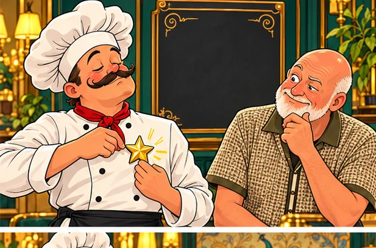
RickWie heeft die ster gegeven?
ChefIk. Dat scheelt enorm in de wachttijd.
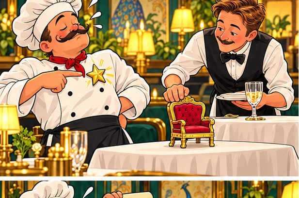
BedieningMoet ik die ster ook indekken?
Het eten krijgt een langere uitleg dan bereidingstijd.
ChefEen dierlijke compositie op een bed van lokaal landschap.
TiesVlees met groenten.
ChefDat klinkt wel erg eenvoudig.
AadDat eet ook makkelijker.
Bob gaat heel even naar het Romeinse monument.
ElisaBob, waar ga je heen?
BobEven kijken bij dat Romeinse monument.
ElisaHet eten komt zo.
BobDie Romeinen wachten al tweeduizend jaar. Ik schiet op.
Het bier is lauw. De verantwoordelijkheid is zoek.
BobMijn bier is lauw.
BedieningWarme dranken: de keuken.
KeukenGlazen: de afwas.
AfwasIk heb het al doorgestuurd naar de regen.
De patat verschijnt. Het vlees is inmiddels geschiedenis.
BedieningUw patat.
AadMijn vlees is al naar huis.
ChefDit is de nasmaak.
JunaKomt het voorgerecht dan morgen?
De kinderraad opent de Romeinse dopcommissie.
JunaWat heb je gevonden?
BobDe sluitsteen van een Romeins drankimperium!
DannyEr staat cola op.
BobZe liepen dus verder op ons vooruit dan gedacht.
De dessertbestelling verdwaalt in de groepsapps.
BedieningWie had wat besteld?
JoeriZoek op ‘ijs’.
BedieningIk vind alleen een ijsbeerfoto uit 2022.
BobKan die met slagroom?
Een staatscrisis. Met spikkels.
JunaNiemand luistert. Ik ontbind het restaurant!
BedieningWie wil er ijs?
MasonDe crisis is voorlopig opgeschort.
Josie MayMet spikkels. Anders komt er een onderzoek.
Een draak, een Zilverrug en twee doorslaggevende roltongen.
Het drakenrijk luistert. Meestal.
Josie MayWij besturen vanaf nu alleen het drakenrijk.
MasonU mag wel blijven zitten.
ChaIk regel de exploitatie.
DannyWie doet de eindschoonmaak?
Linda levert op afstand een draak.
LindaIeder goed kasteel heeft een draak.
RosalieKan die ook liggend werken?
JunaJij bent de vloerverwarming.
AvaDeze vlag gaat straks op zestig graden.
ElisaWesley, niet ophangen. Rosalie is nu een verwarmingsinstallatie.
De Zilverrug bevoorraadt het front.
KwintenIk heb nog wat gehaald.
RickVoor wie?
KwintenDe mannen.
BobEn de overige inwoners van Zuid-Holland?
Dan nemen Aad en Ties het feest zelf over.
TiesWe hebben toch een leuke familie.
AadZullen wij het feest even overnemen?
63 jaar getrouwd. Tijd voor officieel trompetgeschal.
TiesKlaar voor de grote finale?
AadNa 63 jaar oefenen: ja!
De enige staatsgreep waar álle tafels voor applaudisseren.
JunaDe koningin en koning hebben gesproken!
BobUnaniem aangenomen. Nog een rondje!

De regen wacht geduldig. De familie neemt de tijd.
Een nieuwe storing: de paraplu staat binnenstebuiten.
ElisaWe hebben een paraplu met de binnenkant buiten.
DjordyAl geprobeerd hem uit en aan te zetten?
AvaHij is al drie keer opnieuw opgestegen.
WesleyAls het pad overstroomt, kunnen we er vissen.
DjordyPapa. Eerst de familie naar de auto. Daarna de karpers parkeren.
De terugweg blijkt óók tien minuten te duren.
RickIk wist niet dat die tien minuten een retourticket hadden.
DannyPas op! Een plas!
SuusDanny, we lopen inmiddels dóór het weerbericht.
Afscheid. Deel één tot en met zeventien.
RickWe gaan nu echt.
TiesJa hoor. Dag lieverd!
ChaWacht, nog één foto!
DannyNiet op de modder staan!
BobDanny. Dit is een landgoed.
63 jaar samen. En nog steeds hand in hand.
TiesVolgend jaar weer?
AadJa. Maar dan parkeren we in de woonkamer.
Het verhaal uitgelezen? Hier vind je de familie en de echte beelden van het feest.
De familiebanden zijn echt. De superkrachten zijn voor deze strip behoorlijk uit de hand gelopen.
Sinds 1963 samen. Koning en koningin van het feest. Hun superkracht: elkaars hand vinden, zelfs midden in familiechaos.
Zus van Bob, Rick en Marcel. Ondernemer, partner van Danny en moeder van Josie May en Mason. Kan van een omgeklapte paraplu nog een verdienmodel maken.
Man van Cha. Schoonmaker in pak en meester van gesprekken die nergens beginnen en nog minder ergens eindigen. Heeft in de strip een dweilvergunning voor de aarde.
Kind van Aad en Ties. Vader van Elisa en Suus, samen met Ava. Ambtenaar, luchtkastelenbouwer, visser en detectorzoeker. Zijn plannen staan klaar. Zijn hengel ook.
Moeder van Elisa en Suus, samen met Bob. Gezellig tussen de familie, met genoeg droge humor voor een bijzonder natte avond.
Dochter van Bob en Ava, vrouw van Wesley en moeder van Rosalie en Djordy. Lacht mee om de familiechaos en belt tussendoor haar mannen bij de visstek. Haar vader noemt ze gewoon Bob.
Dochter van Bob en Ava. Partner van Kwinten, moeder van Joeri en Juna. De zeekip met humor. Persvoorlichter van alles waarvoor geen persvoorlichter nodig is.
Partner van Suus en vader van Joeri en Juna. Vriendelijke Zilverrug, technische AI-knutselaar en bevoorradingsdienst. Geen gebrul. Wel een bijzonder zwaar dienblad.
Zoon van Suus en Kwinten, acht jaar. Techneut, hacker en uitvinder. Vraagt bij een draak eerst naar het besturingssysteem.
Dochter van Suus en Kwinten. Toneelspeelster met betoverend rood haar. Kan een restaurant binnen twaalf minuten ombouwen tot drakenrijk.
Dochter van Elisa. Schone slaapster, tot Juna een avontuur begint. Draak op afroep. Wel graag met pauzes.
Rick is een kind van Aad en Ties. Samen met Petra ouder van Louren, Yannick en Floran. Sportfamilie met een ononderbroken uitzending.
Dochter van Rick en Petra. Sportclub. In deze strip kan ze een naderend stoelwisselplan horen zonder van de darts op te kijken.
Zoon van Rick en Petra. Sportclub. In deze strip verantwoordelijk voor de grensbewaking en de batterij van de uitzending.
Zoon van Rick en Petra. Sportclub. Vindt dat iedere leg gevolgd moet worden door nog één leg. Een waterdicht sociaal beleid.
Kinderen van Cha en Danny. Rustig en met liefde opgevoed. Veroveren de villa met keurige zinnen. Niemand ziet het aankomen.
Man van Elisa, vader van Djordy en karpervisser. Kon niet bij het feest zijn vanwege storingsdienst. Ging met Djordy vissen. In deze strip verantwoordelijk voor de hengels en ondergeschikt aan zijn eigen zoon.
Zoon van Elisa en Wesley. Echt Nederlands kampioen karate en ook graag visser. Ging mee met zijn vader tijdens de storingsdienst. In deze strip de leidinggevende: kort overleg, heldere taken, papa aan het werk.
Kon er niet bij zijn: haar festival was al geboekt. Midden in een middeleeuws kasteelverhaal. In de strip hofdame van de Basdreun en leverancier van drakenverhalen aan het kinderbestuur.
Zoon van Aad en Ties, broer van Cha, Bob en Rick. Ontbrak op het feest: chillend onder een boom in Afrika. Verdient op afstand geld in Nederland en telt het in de strip rustig na. Telt onder een boom zijn in Nederland verdiende geld. Iedere onderbreking kost hem een nieuwe telling.
Tik op een foto om hem groot te bekijken. Gebruik daarna Vorige en Volgende.